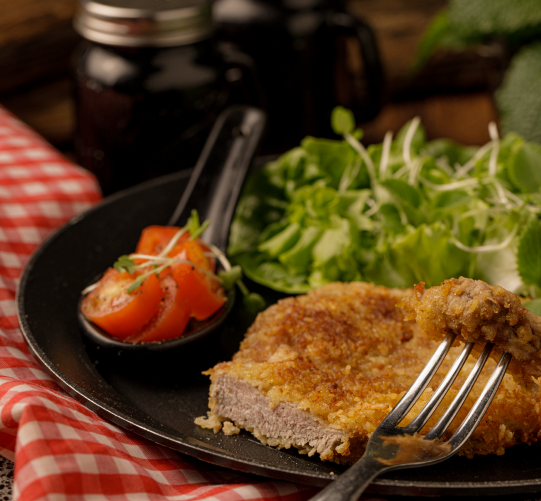

Milanesa de carne

Ingredientes
- 300g de bistec de vacuno
- Mix de Pimientas
- 100g de harina
- 2 huevos
- 100g de pan rallado
- ½ cdta de Sal de Mar
- 1 cda de Sazonador de parrilla
Preparación
- Salpimentar los bistec y reservar.
- Preparar 3 platos para apanar. El primero va a tener la harina, el segundo los huevos mezclados y el tercero el pan rallado mezclado con el sazonador y la sal.
- Pasar cada bistec por la harina, luego el huevo y el pan rallado. Luego repetir el huevo y pan rallado nuevamente. Recordar siempre retirar el exceso de ingredientes entre cada capa.
- Precalentar una sartén con aceite a fuego medio o hasta que llegue a 1680C.
- Agregar una milanesa a la vez y freír por 2 minutos por lado. Retirar y poner sobre una rejilla para que escurra el exceso de aceite.